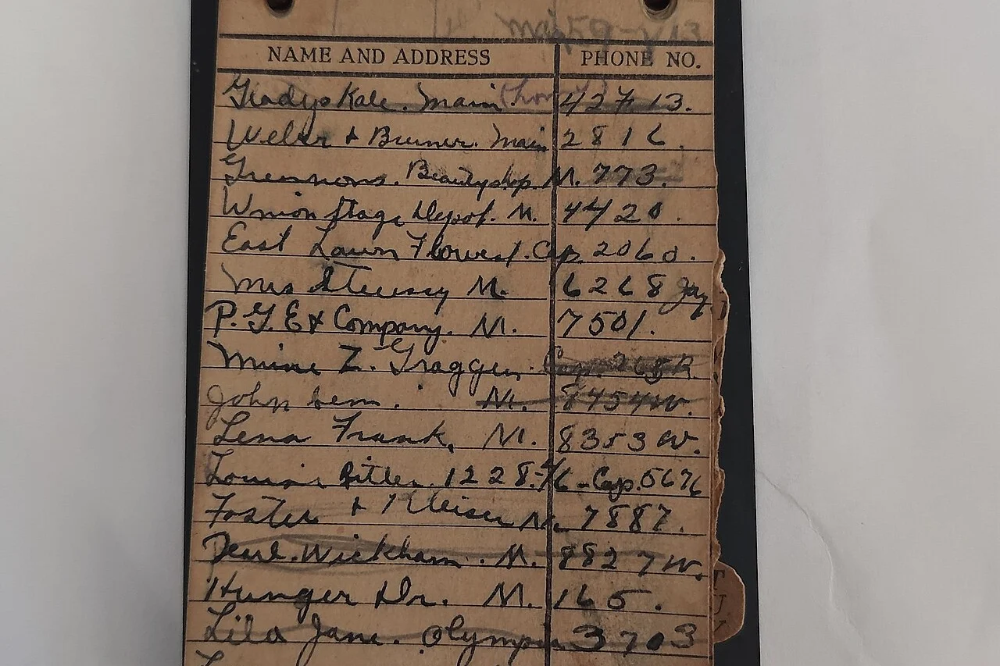

The little things we remember about Grandma's kitchen
A recipe tin, a well-used apron, and a table where there was always room for one more.
Read the storyREMEMBER THIS? - HOME & EVERYDAY LIFE - 1950s-80s
A heavy handset, a curly cord, and a dial that took its time. Do you still remember your family's number by the feel of your finger?
Think back to the phone in your childhood home. Not a phone you carried. The phone. It sat on a kitchen counter, a hallway table or a wall, and if you wanted to talk, you went to it.
For many families, that phone was a desk or wall set of the kind Western Electric made for the Bell System. The best-known model, the Model 500, came out in 1949. Between then and 1984, more than 93 million were made for homes and offices. So the odds are good that you have held one, or its cousin.

Every home had a spot where the phone lived, and everybody knew where it was. If it rang, you could find it with your eyes closed. If you wanted to make a call, you went there and you stayed there, and the rest of the family walked around you.
Maybe yours was black, the color of nearly every phone for years. Maybe it was a color that matched the kitchen, like harvest gold or avocado. Maybe it hung on the wall with a cord that reached across the room, and a mark on the wallpaper where hands had leaned.

Every number had a small ritual. You slid a finger into the hole, pulled the dial around to the metal stop, and let go. Then came the soft whirr and tick as it spun back by itself.
A number with lots of 9s and 0s meant a longer wait. You may remember how it felt to dial the last digit and then hold your breath, in case someone had already picked up at the other end. You also remember how it felt to get a digit wrong. There was no delete key. You hung up, waited for the dial tone and started again.

The phone had a language. There was the dial tone, a steady hum that meant you could begin. There was the busy signal, a flat beep, beep, beep that meant someone was already talking. There was the ring itself, loud enough to be heard in the yard.
And for some calls, there was a voice. You dialed 0 and an operator answered, a calm person who could connect you to places the dial would not reach. Maybe you remember being told that long-distance calls were for important news, and that you should say hello and then hand over the phone.

The handset was heavy enough to feel like something. The cord was coiled, and it stretched. Maybe you carried the phone as far as it would go, around the corner and into a closet, for a little privacy.
Maybe the phone sat in one spot for years, and the wall behind it had a faint smudge from all the leaning. Maybe there was a notepad nearby, a pencil on a string, and a page full of numbers in one person's handwriting.

Before voicemail and before screens, if you wanted to hear from someone, you waited. You waited by the phone for a friend to call, or a job, or news from far away. If you missed the call, you missed it.
Maybe a teenager in your house stayed on the phone so long that a parent knocked on the door. Maybe somebody lifted the receiver quietly to listen in. Everyone remembers the click that meant someone else was on the line.

Here is the odd part. You may not remember what you had for lunch yesterday, but you might still know the number of the house you grew up in. Seven digits, said in a rhythm your fingers remember.
Try it now. Say it out loud. Who used to answer when you called? Maybe it was a parent who said "hello" in a special voice. Maybe a grandparent who let it ring four times before reaching the phone. Maybe a friend who picked up and said nothing, so you knew it was them.
How many of these do you remember? Where was the phone in your house, and who was on it the most?
If you want to share this one, send it to someone who shared that number or that phone. Ask them: do you still remember it?
A recipe tin, a well-used apron, and a table where there was always room for one more.
Read the story
One television, a favorite seat, and a theme tune that brought everyone into the room.
Read the story
10 questions about familiar objects. No timer.
AI-created period illustration
Take the quiz← Back to Dear Old Days · All articles · About · Privacy policy · Photo credits · Cookie settings